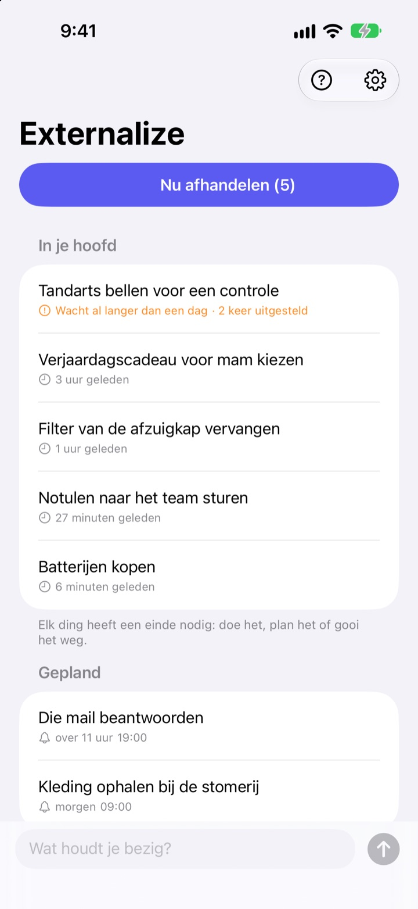
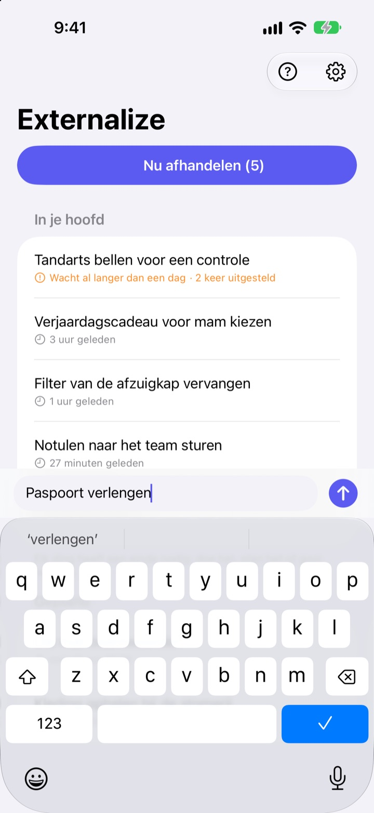
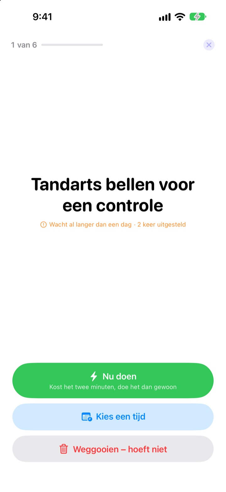
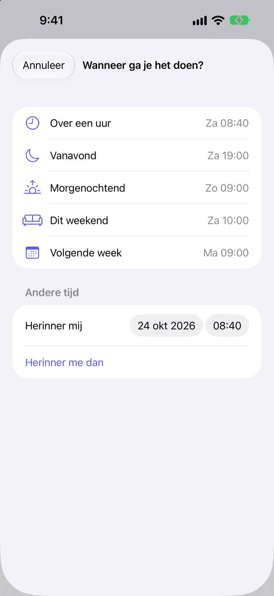

Nu noteren.
Vanavond afhandelen.
“O ja, ik moet nog…” Haal het in een paar woorden uit je hoofd en laat het los. ’s Avonds handel je af wat er over is, één voor één.
Alle functies zijn gratis. Geen account, niet inloggen.

Probeer het hier
Typ iets wat door je hoofd spookt, of tik op een voorbeeld. Druk daarna op ‘Nu afhandelen’ en geef elk punt een einde.
Zelfs kleine dingen nemen ruimte in je hoofd
Onder de douche, voor een rood stoplicht, net voor je in slaap valt: ‘Dat moet ik nog doen.’ Nergens om het op te schrijven, dus houd je het vast, en waar je mee bezig bent lijdt eronder. Takenapps willen eerst een lijst en een deadline, en dan wordt opschrijven zelf een klus.
Drie seconden, dan loslaten
Open de app en typ in de regel onderaan. Geen lijsten, mappen of deadlines.
Tik op de widget op je toegangsscherm en de app opent met een lege regel. Zeg Onthoud in Externalize tegen Siri of zet het op de actieknop, en het is bewaard zonder de app te openen.

’s Avonds, één voor één
Staat er nog iets open, dan krijg je om 21.00 uur één melding. Niets open, geen melding.
Als je begint, komen de punten één voor één groot in beeld. Kies ‘Nu doen’, ‘Kies een tijd’ of ‘Weggooien’ en het volgende verschijnt. Kost het twee minuten, start dan de timer en doe het meteen.

Niets ligt te verstoffen
Kies ‘Over een uur’, ‘Vanavond’, ‘Morgenochtend’, ‘Dit weekend’ of ‘Volgende week’ en het komt op dat moment terug. Vanuit de melding tik je meteen op ‘Klaar’, ‘Morgenochtend’ of ‘Weggooien’.
Wat al langer dan een dag wacht en wat je steeds uitstelt, wordt gemarkeerd, zodat je ziet wat er telkens tussendoor glipt.

In drie stappen aan de slag
- 1
Schrijf het op
Een paar woorden in de app, in de widget op het toegangsscherm of via Siri, wat het dichtstbij is.
- 2
Sta meldingen toe
De app vraagt het één keer, de eerste keer dat je iets noteert. Ze brengen de avondmelding en de tijden die je kiest.
- 3
Handel het ’s avonds af
Tik op de melding of op ‘Nu afhandelen’ en geef elk punt een einde.
Direct vanuit de lijst
- Tik op een punt
- kies ‘Klaar’, ‘Kies een tijd’ of ‘Weggooien’
- Veeg naar rechts
- Klaar (verdwijnt uit de lijst)
- Veeg naar links
- Weggooien, of ‘Plan’ om een tijd te kiezen
- Nu afhandelen
- loop één voor één door wat er over is
- Onthoud in Externalize
- zeg het tegen Siri zonder de app te openen
- Instellingen ▸ Avondmelding
- tijd wijzigen of uitzetten
Bij het kiezen van een tijd betekent ‘Vanavond’ 19.00 uur, ‘Morgenochtend’ 9.00 uur, ‘Dit weekend’ zaterdag 10.00 uur en ‘Volgende week’ maandag 9.00 uur. Je kunt ook zelf elke datum en tijd kiezen.
Veelgestelde vragen
Kan ik iets noteren zonder de app te openen?
Ja. Zeg Onthoud in Externalize tegen Siri; Siri vraagt wat je wilt noteren en bewaart het. Wijs de opdracht ‘Noteer’ toe aan de actieknop in Instellingen, dan is één druk genoeg.
Hoe voeg ik de widget toe aan het toegangsscherm?
Houd je vinger op het toegangsscherm, tik op ‘Pas aan’ en kies het toegangsscherm, tik op het widgetgebied en voeg Externalize toe. Eén tik opent een lege regel, en de widget toont hoeveel er nog openstaat. Voor het beginscherm is er ook een kleine widget.
Kan ik de avondmelding wijzigen of uitzetten?
Tik op het tandwiel rechtsboven ▸ Avondmelding om de tijd te wijzigen of hem uit te zetten. Standaard is het 21.00 uur, en op dagen dat er niets openstaat blijft hij stil.
Ik krijg geen meldingen.
Als de instellingen van Externalize zeggen dat meldingen uit staan, tik dan op de knop daar om ze aan te zetten in de iPhone-instellingen. Op dagen dat er niets openstaat, komt er geen avondmelding, en dat hoort zo.
Hoe komt een gepland punt terug?
Op de gekozen tijd krijg je een melding. Houd hem ingedrukt om meteen ‘Klaar’, ‘Morgenochtend’ of ‘Weggooien’ te kiezen. Doe je niets, dan gaat het terug naar ‘In je hoofd’ en handel je het de volgende keer af.
Kan ik iets terughalen dat ik op klaar zette of weggooide?
Nee. Afgehandelde punten verdwijnen uit de lijst en er is geen archief. Twijfel je nog, kies dan liever een tijd dan het weg te gooien.
Gaan mijn punten mee naar een nieuwe iPhone?
Nee. Alles blijft op dit apparaat en gaat nooit naar iCloud of een server. Verwijder je de app, dan verdwijnt het ook.
Op welke apparaten werkt het?
Op iPhone met iOS 17 of nieuwer.
Vragen of een fout gevonden? Mail naar mizzking75@gmail.com. Met je iPhone-model en iOS-versie kunnen we sneller kijken.